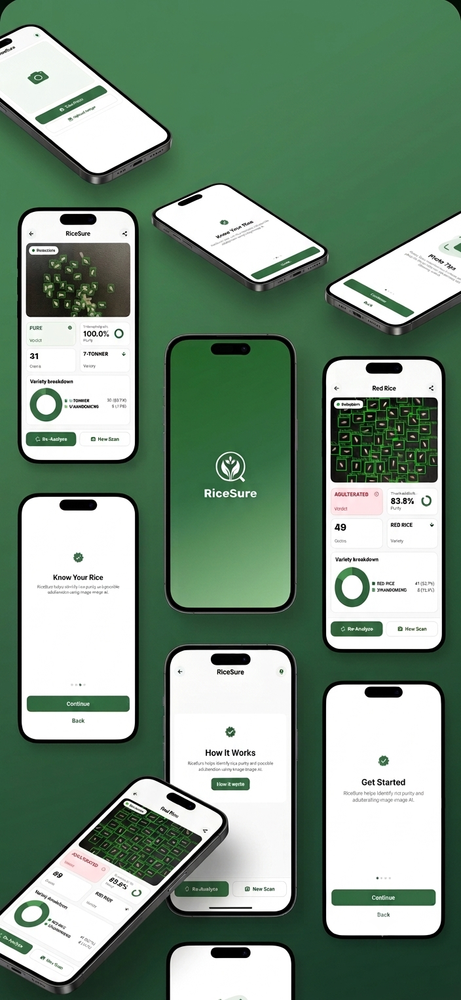

“AUTHENTIC SEED PURITY CANNOT BE HARVESTED WITHOUT SYSTEMATIC FIELD VERIFICATION.”
A biological convolutional neural network framework designed to detect cultivar adulteration kernel by kernel directly over sample flatbeds without laboratory chemical assays.
Diagnostic Template & Live Execution
Side-by-side comparison between the primary diagnostic home template and the actual continuous runtime video execution in the field.

Calibrated capture interface and telemetry control dashboard.
Real-time edge neural inference and boundary segmentation in action.
Specimen Tray Diagnostics
Optical grain segmentation separating compliant batches from commercial adulterations.

Tray Flatbed Ingestion
Standardized optical stream ingestion accommodating natural and controlled field lighting setups.

Cultivar Adulteration Alert
Detects commercial grain mixing (e.g., Red Rice cut with low-tier grains) flagged at ~83.8% batch purity.

100% Homogeneous Batch
Confirms zero contaminant kernel variations, protecting batch price validation and cultivar integrity.
Conference Accolades
Select any formal recognition document to inspect high-resolution verification records.
The RiceSure Project Team
Holy Cross of Davao College // Bachelor of Science in Information Technology
Crown James Cedeño
Fullstack LeadMobile application architecture, native camera streaming integration, and inference backplane.
Jazrel Shan Kurvy Balbuena
UI/UX DesignerErgonomics for outdoor high-glare field environments and intuitive purity distribution displays.
Geovin Josh O. Algusar
Dataset EngineerBiological grain specimen collection, dataset pipeline augmentation, and ground-truth boundary labeling.
Drexler Van R. Arroyo
Document & PapersFormal manuscript drafting, statistical validation synthesis, and SPIE peer conference proceedings.
“RiceSure: A CNN-based Biological Image Processing and Multimedia Framework for Rice Grain Purity Analysis Using Enhanced Mobile Imaging”
Published in Proceedings of SPIE · Paper ID PP531 · Sapporo, Japan